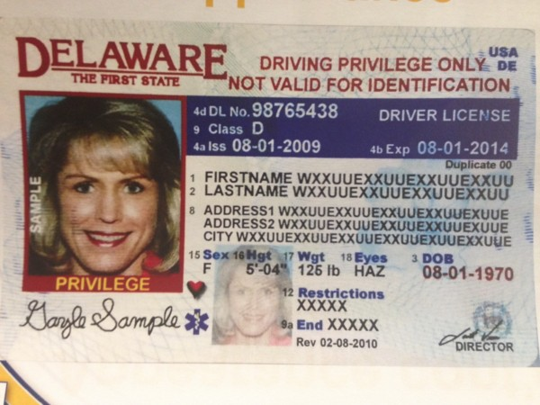
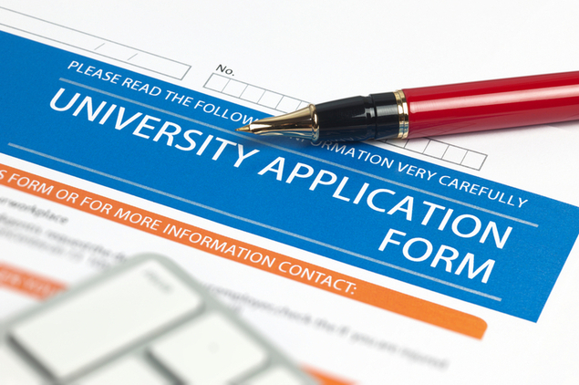

Police Brutality Against African Americans
What to do when you encounter the police?
Reporting Police Misconduct?
What is Police Brutality?
Information for Undocumented People
What can you do to protect yourself from ICE?
What You Didn't Know About Undocumented People
Myths, Facts, and Statistics
Stories
What Undocumented People Are Afraid Of
Take Action
Racism Facts, Statistics, & History
victims
Statistics
History
What Undocumented People Are Afraid Of
Getting Pulled Over Driving Without a License
Oregon
Idaho
Montana
Arizona
Wyoming
North Dakota
South Dakota
Nebraska
Kansas
Oklahoma
Texas
Minnesota
Iowa
Missouri
Arkansas
Louisiana
Wisconsin
Mississippi
Alabama
Tennessee
Kentucky
Indiana
Michigan
Ohio
Florida
Georgia
North Carolina
South Carolina
Virginia
West Virginia
Pennsylvania
New Jersey
Maine
Rhode Island
New Hampshire
Massachusetts
Alaska
Above is a list of the states that don't allow undocumented immigants to obtain a license. Georgia in particular has a state law SB 350 that makes repeat arrests for driving without a license a felony, a law that targets undocumented immigrants who cannot get drivers licenses. Being a minority and being undocumented means being criminalized. There's always going to be a fear when grabbing the attention of a policeman. Not having a license can lead to deportation even if the original reason why they were stopped was because of a DUI checkpoint and not because of a traffic violation.
Getting Pulled Over Driving With a License

California, Colorado, Connecticut, Delaware, Hawaii, Illinois, Maryland, New Mexico, Nevada, New York, Utah, Vermont, and Washington are the states that do provide undocumented immigrants with a license called the Driver's Privilege Card (DPC). Although, it is not a regular driver's license. This driver's license is only used for driving and not for identification. The DPC can give away if you are undocumented or not because it is only available to foreign residents who are unable to produce legal presence within the United States and meet certain eligibility requirements. Knowing this information, undocumented immigrants fear to show their license if they ever have to because it might be used against them. Some haven't even applied or hesitated to because they feel it is a trap to getting deported.
What Undocumented Students Are Afraid Of
Applying to College

When going through the college application process, undocumented students have to check boxes that imply that they are undocumented. There's a constant fear when facing immigration challenges and having to let colleges know your stance can lead to wondering if it's worth letting them know to obtain a higher education or playing it safe and not applying to college at all.
Letting Their Counselors Know About Their immigration Status
College seems like an unattainable achievement that can only be dreamed of for undocumented students. Every undocumented student does not allow their school counselors to know that they are undocumented. And when a student does not ask for help, they will not receive help. They are already at a disadvantage with the lack of opportunities that they have and the stress that their immigration status brings to their personal life. But if they want to access college without paying out of pocket, they have to apply to colleges that have enough financial aid. These colleges are usually, if not always, the most selective in the nation, though. Without the right pathway, undocumented students might not be prepared to show colleges that they can succeed in their institutions when the time comes.